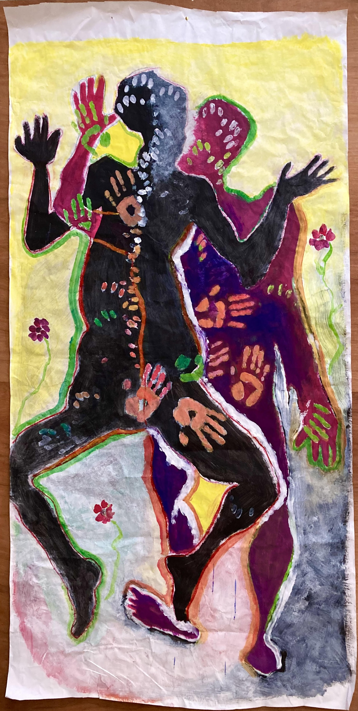

Corps
Peintures

Le vide comme prolongement du dessin.

Le dessin comme une exploration de soi.

Le corps comme un paysage intérieur.

Le vide comme prolongement du dessin.

Le dessin comme une exploration de soi.

Le corps comme un paysage intérieur.